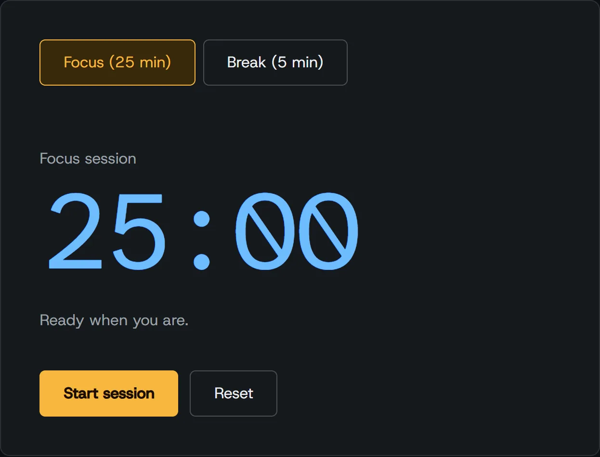

Choose your interval
Start with 25 minutes of focus or switch to a five-minute break.
Focus session
Ready when you are.
There is no complicated setup. Pick a task, settle in, and let the timer hold the boundary.
Start with 25 minutes of focus or switch to a five-minute break.
Pause whenever you need to. Reset to begin the interval again.
Use the break to step away, then choose your next focus session.
A clear view of the time ahead, with the controls you need close by.

Yes. Pause and resume whenever you need to.
The clock stops at zero and the status changes to let you know the interval is complete.
No. This demo runs in your browser and does not save session history.